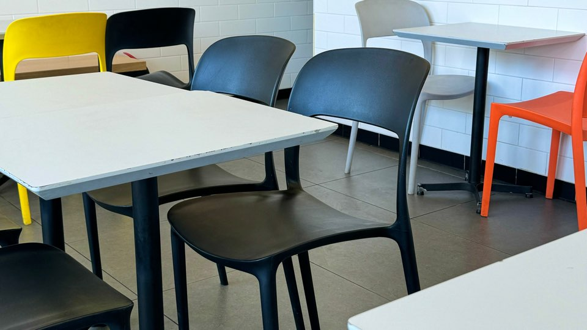

등이 뚫려있는 의자
식당에서 본 등이 뚫려있는 의자이다. 나는 친구들 사이에서 보부상이라 불릴 만큼 항상 짐을 많이 가지고 다닌다. 그래서 카페나 식당 같은 데에 가게 되면 등 뒤에 짐을 놓곤 한다. 식당에 있는 등이 뚫려있는 의자를 보곤 왜 불편하게 등 부분에 구멍을 뚫어 디자인을 했을까라는 생각이 들었다.
김혜은의 눈길을 끈 것들을 디자인 관점에서 소개합니다.
식당에서 본 등이 뚫려있는 의자이다. 나는 친구들 사이에서 보부상이라 불릴 만큼 항상 짐을 많이 가지고 다닌다. 그래서 카페나 식당 같은 데에 가게 되면 등 뒤에 짐을 놓곤 한다. 식당에 있는 등이 뚫려있는 의자를 보곤 왜 불편하게 등 부분에 구멍을 뚫어 디자인을 했을까라는 생각이 들었다.
식당에서 본 노란색의 에어컨이다. 천장에 달린 에어컨이야 학교, 학원, 식당 등 어딜 가나 쉽게 볼 수 있다. 하지만 천장과 식당 분위기에 맞춰 에어컨까지 노란색으로 디자인해놓은 식당은 처음 봐서 신기했다. 내가 가장 좋아하는 노란색이 이 식당의 주 색깔이라 자주 방문한다.
건물 벽에 쓰인 글자이다. 나는 평소에 아빠랑 차를 타고 다니며 건물들의 간판을 보고 무엇을 파는 데인지 맞추는 놀이를 하곤 한다. 그러다 보면 무엇을 하는지 알 수 없는 간판들이 많다. 이 글자가 쓰인 건물 벽을 보곤 벽에도 디자인하면 무엇을 하는 가게인지 쉽게 알 수 있겠다는 생각이 들었다.
복고풍의 술집이다. 친구들과 어떤 술집을 갈지 고민하던 중 관심을 가지게 된 술집이다. 나는 복고풍을 좋아한다. 새로운 느낌을 좋아하는 나에게 한 번도 느껴보지 못한 감성인 복고는 나에게 큰 흥미와 재미였다. 지금은 느끼기 힘든 복고 감성의 그릇과 인테리어로 해놓은 디자인이 정말 좋았다.

여름 느낌 포스터이다. 미술 학원에서 학생이 동아리 활동으로 포스터를 만들고 있었다. 주제는 자신이 좋아하는 것이었는데 여름을 좋아해서 여름 느낌으로 포스터를 제작했다고 한다. 나와 좋아하는 게 똑같은데도 다른 느낌의 여름 디자인을 떠올린 게 신기하고 나의 취향과 다른 여름 디자인도 나의 마음에 들었다.
지나가다가 본 다른 사람이 신은 빨간색 컨버스이다. 보라색의 꽃들을 구경하던 와중 다른 사람의 빨간색 컨버스 디자인을 같이 보게 되었다. 보라색의 보색이 빨간색이라 대비 감 때문에 시선이 집중된 것도 맞지만 빨간색의 쨍한 색깔의 컨버스 디자인이 나의 취향에 잘 맞아 눈길이 갔다.
소품 숍에서 본 핑크색 인형이다. 요즘 나는 뜨개질로 인형을 만드는 취미에 빠져있다. 최근에는 회색의 모루로 토끼 인형을 만들고 있다. 그래서 그런지 다른 사람이 수제로 만든 토끼 인형에도 관심이 간다. 또 내가 좋아하는 색감과 부드러운 느낌의 디자인이라 마음에 들었다.
유리 바닥으로 보이는 해변이다. 부산에 당일치기 여행을 갔다가 봤다. 위에서 찍은 사진이 아닌 이상 우리가 볼 수 없는 시점을 바닥을 유리로 디자인함으로써 볼 수 있게 된 것이 너무 신기했다. 나는 이런 신박하고 창의성이 돋보이는 디자인을 정말 좋아한다. 나도 이런 디자인을 할 수 있는 사람이 되고 싶다.
낙엽으로 디자인한 고양이이다. 색종이나 찰흙이 아닌 낙엽을 오려 붙여 고양이를 만들었다는 게 특이하기도 하고, 환경오염 방지에도 좋아 보였다. 색종이나 찰흙으로 만드는 건 사람들에게 널리 알려져 있고, 경험이 많기도 하지만 낙엽으로 디자인 한 건 처음 봐서 크게 와닿았다.
벼와 꽃 풍경 사진엽서이다. 나는 평소에 그림엽서만을 좋아했다. 근데 이러한 사진엽서를 보고선 내가 좋아하는 사진을 다른 사람에게 선물한다는 게 정말 특별할 거 같다는 생각이 들었다. 그래서 이후로 이런 개개인의 취향이 담긴 풍경 사진으로 디자인된 엽서를 좋아하게 됐다.